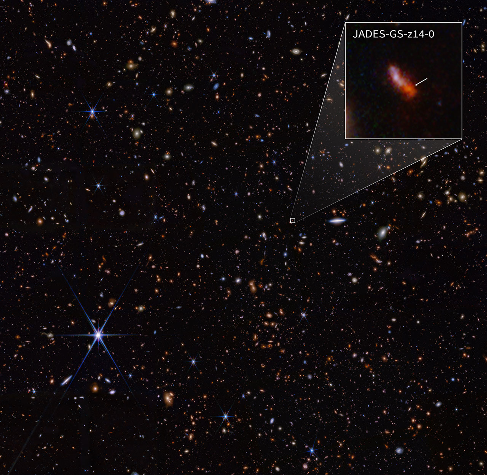
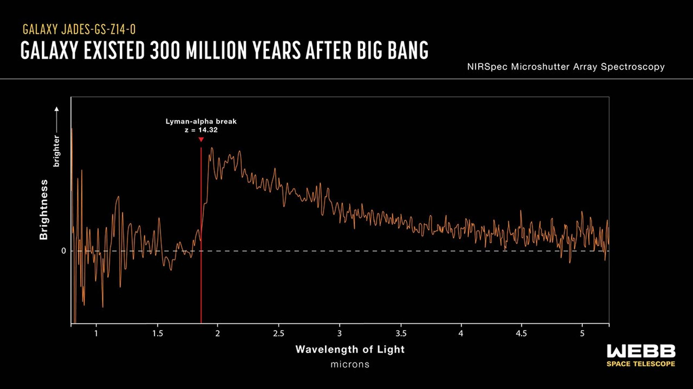

The faint, red smudge of JADES-GS-z13-0 captured in the deep field.
A Glimpse into the Infant Universe
Discovered during the JWST Advanced Deep Extragalactic Survey (JADES), this exceptionally faint smudge of light represents one of the earliest known galaxies. We are observing JADES-GS-z13-0 as it existed a mere 320 million years after the Big Bang. At this epoch, the universe was only about 2% of its current age.
The significance of this discovery lies in its extreme redshift (z = 13.2). As the universe expands, light traveling through space stretches. Over 13.4 billion years, the originally ultraviolet and visible light emitted by the young, hot stars in this galaxy stretched so far that it shifted entirely into the infrared spectrum by the time it reached our solar system.

The Technology Behind the Image
NIRCam (Near-Infrared Camera)
JWST first identified this galaxy using NIRCam, staring at a single patch of sky in the Fornax constellation for days. By taking images through different infrared filters, astronomers looked for "Lyman breaks"—where the galaxy appears bright in longer infrared wavelengths but completely vanishes in shorter ones due to absorption by neutral hydrogen gas in the early universe.
NIRSpec (Near-Infrared Spectrograph)
Seeing a faint red dot isn't enough; scientists needed proof. Using NIRSpec's microshutter array, JWST captured the specific spectrum of the galaxy. By measuring exactly how much the chemical "fingerprints" in the light were shifted toward the red end of the spectrum, astronomers definitively confirmed its record-breaking distance.
Rewriting Cosmic History
The existence of fully formed galaxies like JADES-GS-z13-0 so early in the universe challenges previous astrophysical models. It indicates that star formation began much earlier and proceeded much faster than previously thought.
- Compact and Star-Forming: Despite its age, it is highly active, forming stars at a rate comparable to the modern Milky Way, but packed into a space thousands of times smaller.
- The Black Hole Connection: Studying these early, dense star-forming regions is critical for understanding the origins of the first supermassive black holes. It remains an active area of research whether the rapid collapse of pristine gas clouds in early galaxies like this led to the direct formation of black hole "seeds."
- Metal-Poor Environment: The stars here are made almost entirely of hydrogen and helium, lacking the heavier elements (metals) forged by later generations of stars.
Spectroscopic Evidence

The spectrum showing the Lyman break confirming the z=13.2 redshift.